Весна по расписанию
- 1 и 2 марта 2008 -
Середина недели, в городе с крыш капает, тепло и грязно.
В пятницу снег был. Я еще подумал - сноубордисты
кататься собрались,
вот весна и кончилась. И по прогнозу на выходные
- сплошная облачность.
Ну и ладно, всего-то проблем, что фотки будут
серые и мрачные.
Но прогноз погоды, к нашей радости, ошибся :)
Пятница, решили устроить вечерний заход. Света по пути из Иркутска успела схватить экстрима на заснеженной дороге. Машину оставили в Выдрино, у Анатолия, он же и до Мамая довез. Идем, пинаем снежинки, светим фонариками на елки. В зимовье относительный порядок, даже и не скажешь, что в прошлые выходные здесь тусовалось 2 десятка человеков. 11 фрирайдеров в одном зимовье. Одна бензопила и два топора. Кто выживет? Смотрите на нашем канале - "Зимуха-Мокруха". Вот так вот бывает при отсутствии хозяев :)
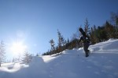
Суббота, 1 марта. Весенние дни длинные, и кататься хочется много и везде. Встаем пораньше и с удивлением не находим на небе облаков. Все чисто! Ставим рекорды - время выхода 9:50 :) Народ еще не подошел и мы пока вдвоем среди гор, погода и настроение отличное! Солнце поднимается все выше, мы тоже. Припекает и обдувает по очереди, то раздеваться надо, то одеваться :) Тропа на Три Березы и на Мамай ищется на ощупь, все перемело. Вышли на Мамай, Света обула снегоступы на пробу и пошли по гребню на запад, посмотреть на долину Осиновки. А посмотреть там есть что - склоны весьма заманчивые, стоишь наверху и скользишь по ним взглядом. Уехать туда легко, а вот вернуться - большая проблема... ну мы туда и не поехали, как-нибудь в другой раз, когда вертолет в кармане будет :) Позагорали немного и поехали в Северный цирк. Кулуарчик попался немного жестковатый, но это же фрирайд, надо уметь кататься везде. В цирке подождали Костю Шишкина, который шел следом, догоняя нас после утреннего захода с электрички. Заодно присмотрели кулуар для завтрашнего катания. Их там много между скал прячется :)
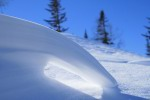
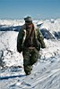
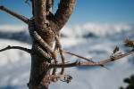
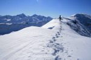
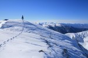
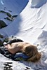
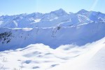
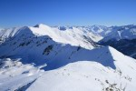
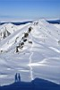
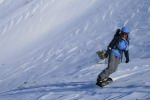
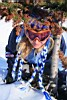
Костя спустился с гребня и очень ругался на углы креплений. Погнали дальше втроем. По цирку прикольно ехать - елки, дропы, пайпы. Все богатство естественного рельефа, весело. Выкатили из цирка по ручью, в котором пришлось повозиться с пухляком и валунами. Дело к вечеру, к зимухе подходят остальные мамайцы, катавшие неподалеку - Ксюша Шультайс, Серега и Вова. А мы решили еще на Три Березы сбегать. Ну и сбегали, правда не очень быстро - тропу уже опять перемело. Зато отлично катанули, на одном дыхании, без падений и без остановок. Зачетно :)
Вечером ужинали куриным супчиком, пили самогон и перцовку. Костя на гитаре играл. Отмечали начало весны и знакомились. Как выяснилось - каждые выходные на Мамае приносят новое знакомство. Даже если на всем Мамае всего 6 человек :)
Воскресенье, 2 марта. Самое хороший подарок - это когда тебя рано утром поздравляют, и ты спросонья вспоминаешь, что у тебя же сегодня День Рожденья :) И остальные подарки тоже порадовали, спасибо вам друзья! На завтрак - яичница на жареном сале, это уже не столько еда, сколько отличный способ всех разбудить :) Продолжаем ставить рекорды по утренним выходам, сегодня стартанули в 9:10. Солнце только что показалось из-за перевала и день обещает быть жарким. Солнцезащитный крем уже совсем не лишний груз :)
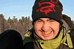
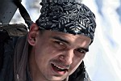
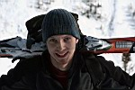
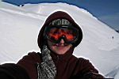
Пошли вчерашним маршрутом - Три Березы, Мамай и дальше на запад по гребню. Только теперь нашли еще более теплое местечко на гребне и еще дольше позагорали, весна реальная - горнопляжники появились :) Ну да кататься тоже хочется, где-то тут еще надо немного дальше пройти и свернуть в кулуар, который еще вчера присмотрели снизу. Так и сделали. Кулуар хороший, снег лежит крепко, правда местами фирн попадается, так что не расслабишься особо.
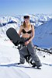
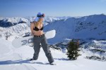
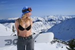
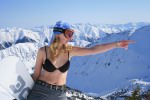
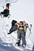
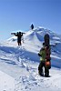
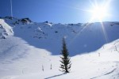
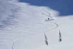
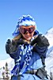
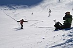
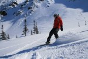
Радует тот факт, что некоторых товарищей ждать не приходится, и что все спустились благополучно. Вот только некоторых все-таки приходится ждать, и очень долго, и это нифига не радует. Понятно, что все когда-то начинали, и что опытом надо делиться, и что по одному нельзя кататься, но пора бы уже начать задумываться о составах групп катания... Так сказать, мысли вслух, на будущее :) Тут еще сам не знаешь точно, в какую жэ залезешь, потому как мест новых много, и где например этот Могул (в котором всего один раз был за три сезона), еще поискать надо. А за тобой же потом люди поедут, которые на Мамае первый сезон, и например дальше учебки не катались. Короче, это надо задуматься...
Вот уже не первый раз замечаю, что на Мамае в самые теплые и кайфовые деньки бывают самые маленькие и душевные компании. Так что респект всем, кто встречал весну в горах!!!
Март 2008
Рассказ : Лёха Белокрылов
Фото : Лёха Белокрылов и Ксюша Шультайс